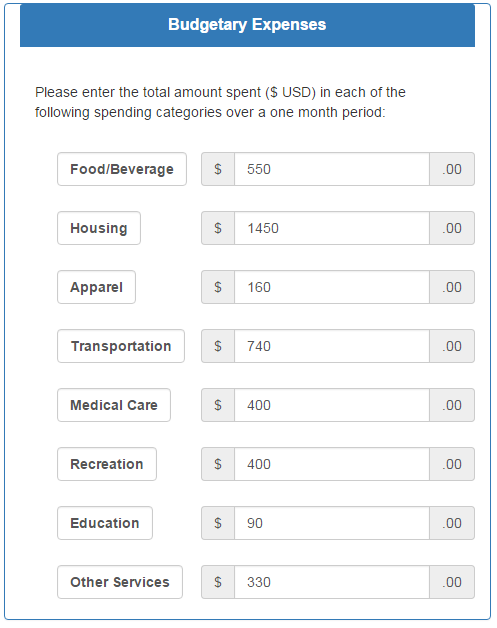
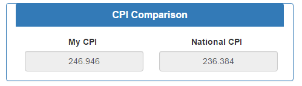
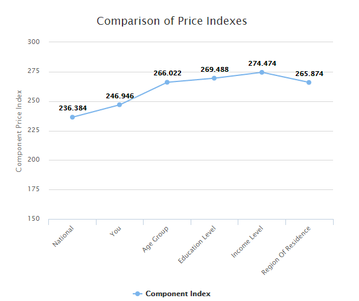
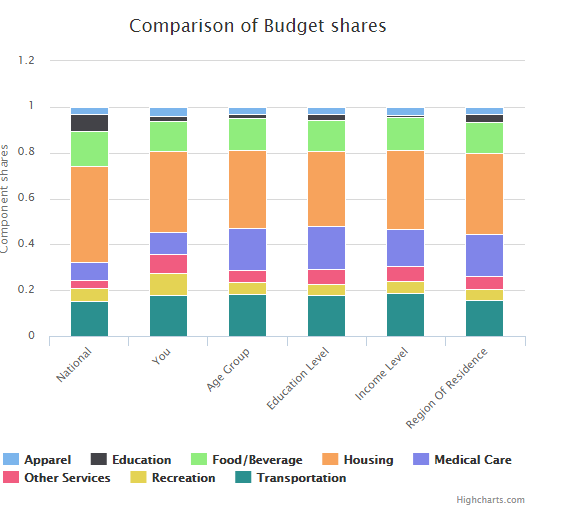

Team Members:
About CPI
The consumer price index (CPI) is a statistical estimate of the change in prices of goods and services bought for consumption. Current CPI=Current item price×Base year price×Current CPIBase year CPI The common complaint with the CPI is that it is based on average consumption for what average people buy.For example, let’s take a fake woman named Emma. Emma is 26, lives in New York, and has a bachelors degree.    What does this Chart mean? It looks like Emma has been impacted by inflation more than the national average. However, when compared to other people in her age group, education level, income level, and region of residence, her spending has been impacted less by inflation that the average person in those groups. This line graph on the right tells us how inflation is having diffenfor different groups.  Here we can see how Emma spends her money where compared to other groups. When compared to the national average, Emma spends more on transportation, recreation and other services. She clearly spends less than the national average housing, education, and medical care. Food and Beverage looks to be the same, perhaps a little less, and appeal looks to be the same, maybe a little more. Putting these two graphs together, the line graph that compares inflation for the different groups, and how the different groups spend their money, we can quickly create some ideas about why Emma’s inflation is higher than the national average yet lower than the other the average for demographic groups . For example, Emma’s medical expenses are a higher percentage of her total spending when compared to the national average, yet lower than the other groups. Perhaps this rate of inflation on this cost is greater than the others.